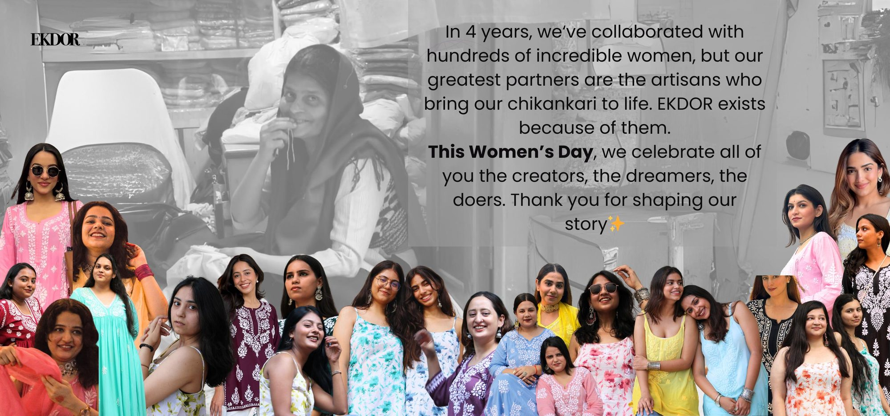
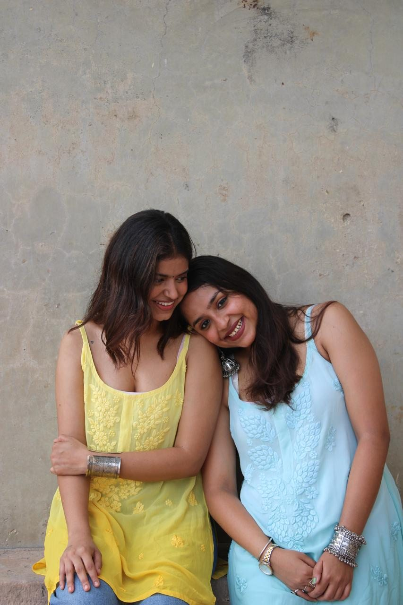
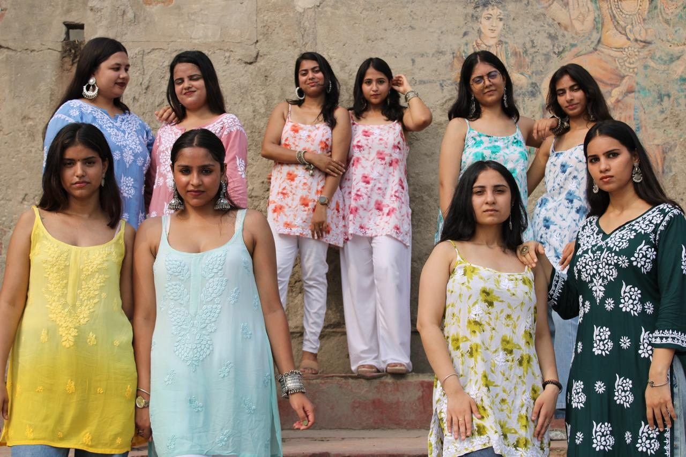
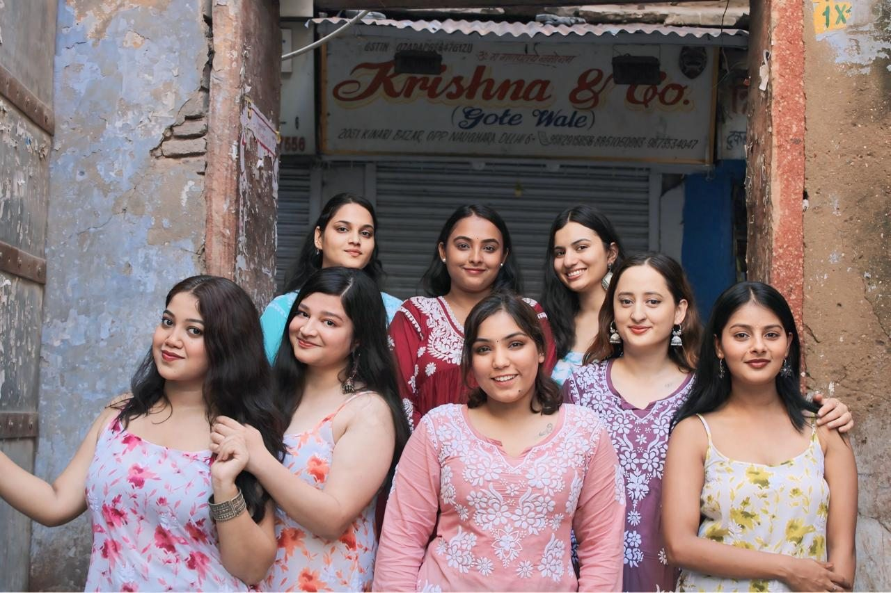
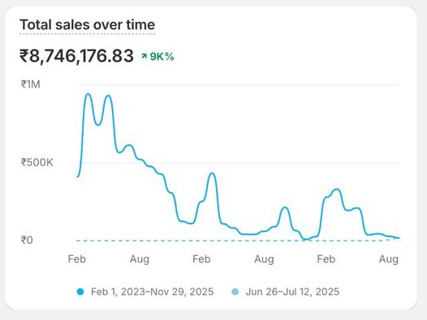
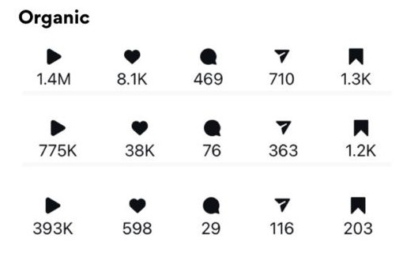

Founder & Operator of EKDOR, a vertically integrated D2C women's apparel brand in the niche craft category of Chikankari — owning product, pricing, supply chain, logistics, growth and brand.

Scaled the business to ₹1Cr+ in revenue at 65% gross margins through disciplined pricing and inventory control.
Acquired 5,000+ paying customers organically at an AOV of ~₹1,650, fulfilling around 3,600 orders a year — with roughly 80% of revenue from organic channels.
Built a genuinely repeat-led business: 45% of revenue from returning customers, and 60% concentrated in five hero SKUs.



Managed a multi-vendor supply chain — 4 vendors with 25–45 day lead-time variability, purchase orders and payment terms — in a category with little standardisation.
Designed and ran a hybrid logistics setup across 3PL (WareIQ), local couriers and in-house runners: 1–2 day delivery in Delhi/NCR and 3–4 days pan-India, at roughly 7–8% logistics cost.
Cut COD risk in a 65% COD business through IVR and WhatsApp verification plus direct customer intervention, keeping returns to ~21%.
Built an 85K+ Instagram-led community, driving brand resonance in a low-trust apparel category.
Managed ₹1L/month of Meta ad spend at a consistent ~4x ROAS, peaking at 6x, through creative-led A/B testing.
Improved cart-to-order conversion by ~15% via checkout optimisation and targeted abandonment recovery.


Built and retained a full-time, cross-functional team of 8, personally training early hires by involving them in pricing, launch and growth decisions — then gradually transferring ownership as the business scaled.
Actively intervened on slow-moving inventory using content and tactical pricing to protect working capital, minimising dead stock to 21% of total inventory.
The brand's most documented creative, Sakhi was shot with real women — not models — in Old Delhi. The choice of real women and a culturally loaded location signalled a deliberate brand philosophy: that chikankari belongs to real women, real lives and real spaces.
It prioritised emotional resonance and cultural authenticity over aspirational distance — reflecting a sharp aesthetic sensibility and the instinct to build brand through storytelling rather than product-forward advertising.